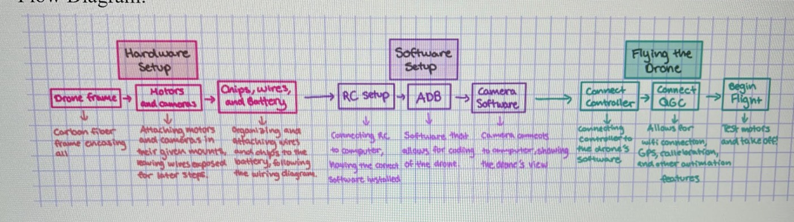

Phase 01 / System Plan
Build workflow
Broke the internship work into hardware setup, software setup, and flight validation so the drone could be brought up in a repeatable sequence instead of debugged as one large system.
- Separated frame, motors, camera hardware, RC setup, ADB, QGC, and flight testing.
- Used the plan as the basis for the instruction manual.